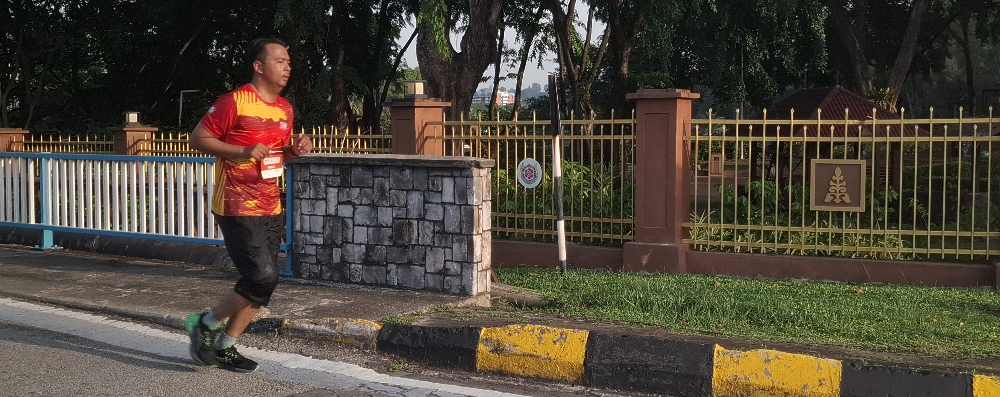

🏃 General Jogging Questions
Q1: Do I need expensive running shoes?
A: Not necessarily. A well-cushioned, comfortable pair with good support is more than enough to get started.
Q2: I’ve never jogged before — can I join?
A: Definitely! Our club welcomes total beginners. Many members started with walking and gradually built stamina.
Q3: Can I jog alone?
A: Yes, though we recommend new members join our group sessions first for support and safety.
Q4: How do I track my jogging progress?
A: Free apps like Strava, Nike Run Club, or even a notebook can help you monitor your distance and time.
Q5: How long should my first jog be?
A: Start with 10–15 minutes of light jogging or brisk walking and gradually increase over time.
Q6: What’s the best time of day to jog?
A: Early morning or late evening is ideal in Malaysia’s hot climate. Look for cooler, shaded periods.
Q7: What if it rains? Do you still run?
A: Light rain can be refreshing, but we cancel runs if there’s heavy rain or lightning for safety reasons.
Q8: Do I need to warm up before jogging?
A: Yes, warming up with light stretching or brisk walking helps prevent injuries and improves performance.
Q9: How often should I jog per week?
A: Beginners can aim for 2–3 times per week and gradually build up to 4–5 if comfortable.
Q10: Can I jog if I have asthma or other health conditions?
A: Please check with your doctor first. Many people with conditions can still jog safely with the right guidance.
Amelia
Position: President
Email:
ecopulse.joggers@gmail.com
Contact Number:
+6012–345 6789
👟 Club Membership & Participation
Q11: Is there a membership fee?
A: Our club is free to join. Some events may have optional participation fees (e.g. fun run kits).
Q12: Where do we usually meet for group jogs?
A: We meet near [e.g. Taman Rakyat Klang main entrance / KL Titiwangsa Park main gate] — location pinned at "TIPS" page.
Q13: What do I need to bring for group jogs?
A: Just wear sportswear, bring a water bottle, and optionally a small towel. No special equipment required.
Q14: Do you provide training plans?
A: Yes! We offer beginner-friendly weekly jogging plans in our Printable Route Maps & Tips section.
Q15: Can I invite a friend who isn’t in the club?
A: Absolutely — our club is open and welcoming to new faces!
🌱 Nature & Environmental Etiquette
Q16: What should I do if I see litter along a jogging path?
A: You’re encouraged to jog with a small pouch and pick up light litter if it’s safe — or report it to park staff.
Q17: Is it safe to jog in the dark?
A: Jogging after dark is not recommended unless you're in a well-lit park or with a group. Wear reflective gear if needed.
Q18: What wildlife might I see during a jog?
A: Depending on your route, you might spot squirrels, birds, frogs, or butterflies — please observe without disturbing.
Q19: Can I take photos while jogging?
A: Yes! Many members snap photos of nature, flowers, clouds, or the environment and share them in our gallery.
Q20: How does the club promote environmental awareness?
A: We encourage green routes, no littering, reuse of water bottles, and learning about plants and trees along jogging paths.